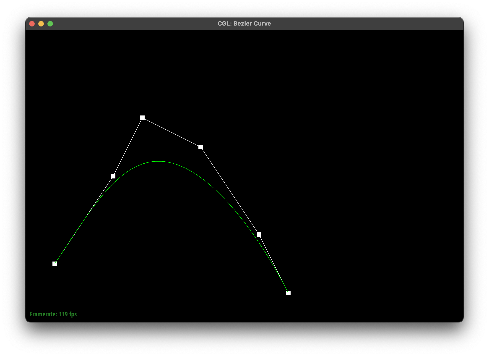
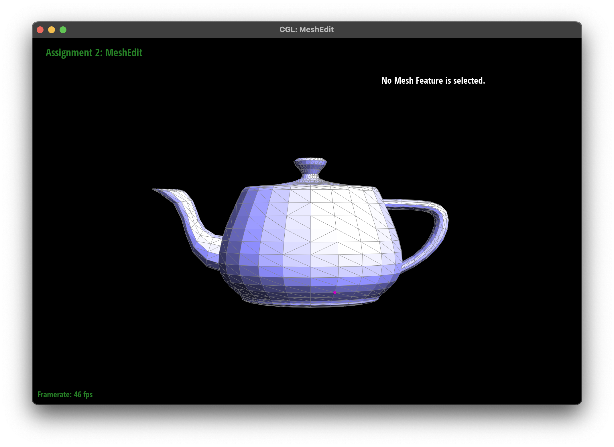

Part 1: Bezier curves with 1D de Casteljau subdivision
De Casterljau's algorithm is a recursive algorithm used to evaluate points on a Bezier curve at a given parameter t, which falls between
0 and 1. The algorithm linearly intepolates between consecutive points at the parameter t to produce n new points, and this process repeats
recursively on the new set of points until only one point remains. This final point lies on the Bezier curve that corresponds to
parameter t. My implementation of the recursive subdivision step takes a vector of 2D control points and returns the new points
after performing one level of interpolation. This was done by computing the weighted average for each pair of consecutive points,
then storing it in a new vetor, which represents the next level of control points.
My Bezier curve with 6 control points

Completed Bezier curve
First level
Second level
Third level
Fourth level
Final point
Modified parameter t
Slightly different Bezier curve
Another slightly different Bezier curve with modified t
Part 2: Bezier surfaces with separable 1D de Casteljau
De Casteljau's algorithm can be extended to Bezier surfaces by evaluating the point on the surface at u, v. This is done by
first fixing u and applying the 1D de Casteljau's algorithm across each row of control points. Then we would fix v and apply the
1D de Casteljau's algorithm across the column of points obtained by fixing u. This essentially reduces the 2D surface to a series of
1D interpolations. I implemented de Casteljau's to evaluate Bezier surfaces by first performing one iteration of linear interpolation
between each pair of adjacent control points for a given parameter t in evaluateStep. Then in evaluate1D, I recursively applied evaluateStep
until only one point remains, and finally I evaluate each row and column with evaluate(u, v) to get the final surface point.
Edge data
Face data
Section II: Triangle Meshes and Half-Edge Data Structure
Part 3: Area-weighted vertex normals
I implemented the area-weighted vertex normals by iterating over the surrounding faces using the half edge data structure for each vertex.
For each triangle face adjacent to the vertex, I took the cross product of two edge vectors then weighed each by the area of the
corresponding triangle. I then normalized the resulting vector, ultimately resulting in smoother and more realistic shading.
Flat shading
Phong shading
Part 4: Edge flip
To implement edge flipping, I first checked if the edge was a boundary edge, and if it was, I returned the original edge unflipped.
For internal edges, I took the size halfedges and their corresponding vertices, faces, and edges, and reassigned the next, twin, vertex,
edge, and face pointers setNeighbors. Then after reconnecting the halfedges in the new edge direction, I updated the halfedge pointers
for the four vertices and adjacent faces. It was tricky for me to get the setNeighbors arguments in the right order. I figured this out by
using print statements so I could see which halfedge each one pointed to before and after flipping.
Flat shading, no flips

Flat shading, with flips
Phong shading, no flips
Phong shading, with flips
Part 5: Edge split
To implement edge splitting, I first listed out all of the old relationships before splitting and did a boundary check. If the edge is a boundary edge, I returned without splitting. Next I
created a new vertex, v4, positioned at the very middle. Then I added new halfedges, edges, and faces to maintain a valid mesh after
the split, and reassigned next, twin, vertex, edge, and face pointers.
Flat shading, no flipping or splitting
Flat shading, with splitting
Flat shading, no flipping or splitting
Flat shading, with flipping and splitting
Part 6: Loop subdivision for mesh upsampling
To implement loop subdivision, I first computed new positions for the old and new vertices that would be created at edge midpoints. Then I split
every edge in the mesh once to create new vertices at the midpoints, and flipped all the new edges connecting old and new vertices.
After subdivision, I updated the position of each vertex in the new mesh, which smooths the geometry based on the weighted averages from the
original positions.
Before loop subdivision
After subdividing once
(Optional) Section III: Potential Extra Credit - Art Competition: Model something Creative